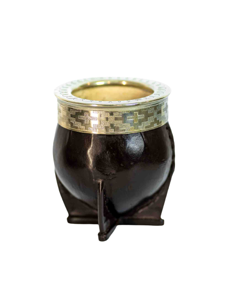

Somos quienes hacemos culto al ritual y costumbre nacional del mate. Salen esos mates? Dale, toma conmigo!
La Yerba mate Canarias, como todo mate uruguayo, se compone principalmente de polvo con hojas muy pequeñas y cortadas, sin tallos (sin palo). Su sabor es fuerte y amargo, y su textura casi cremosa.
Es elaborado con calabazas seleccionadas que tienen una característica en particular: sus paredes son gruesas, porque al ser forradas en cuero ancho, lo harán más pesado, una característica distintiva de este tipo de mate
